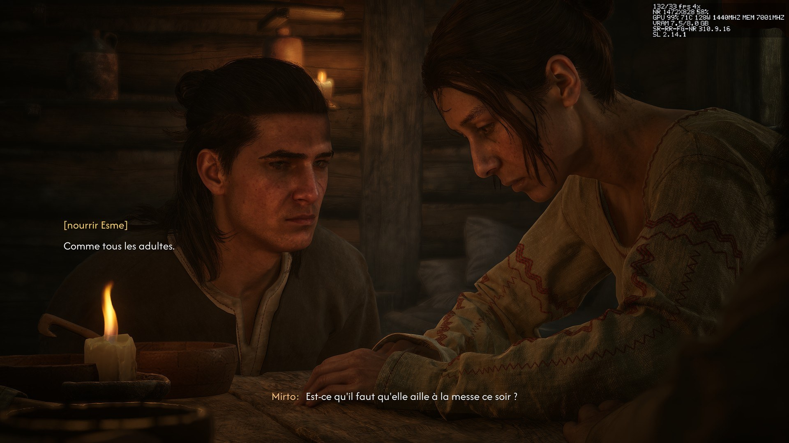
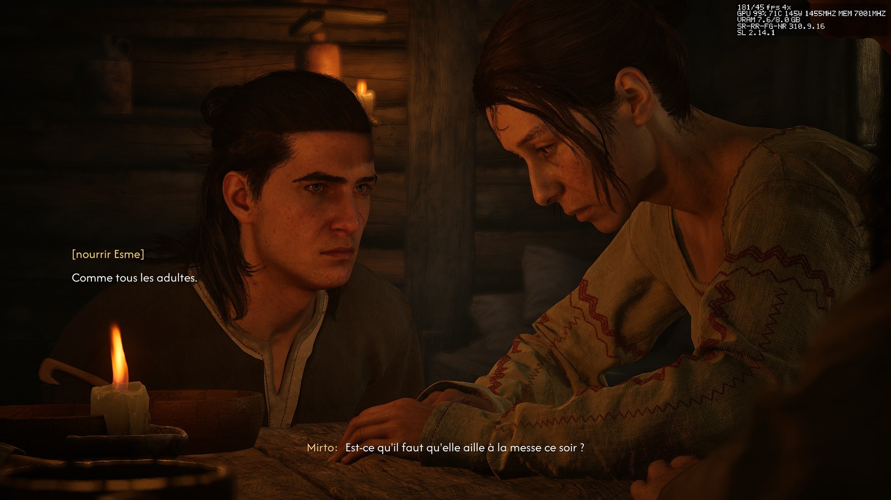
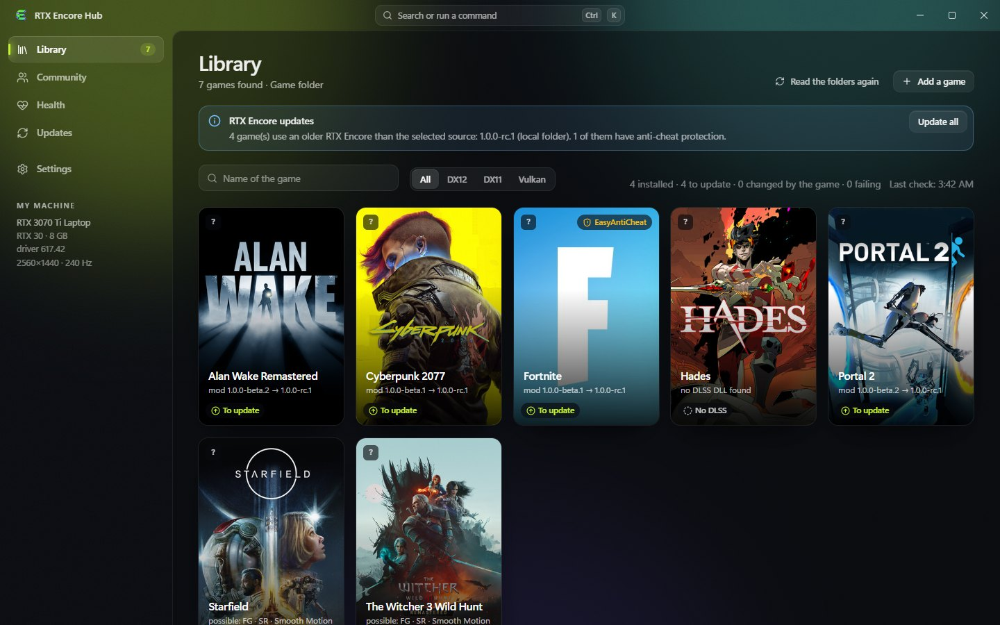
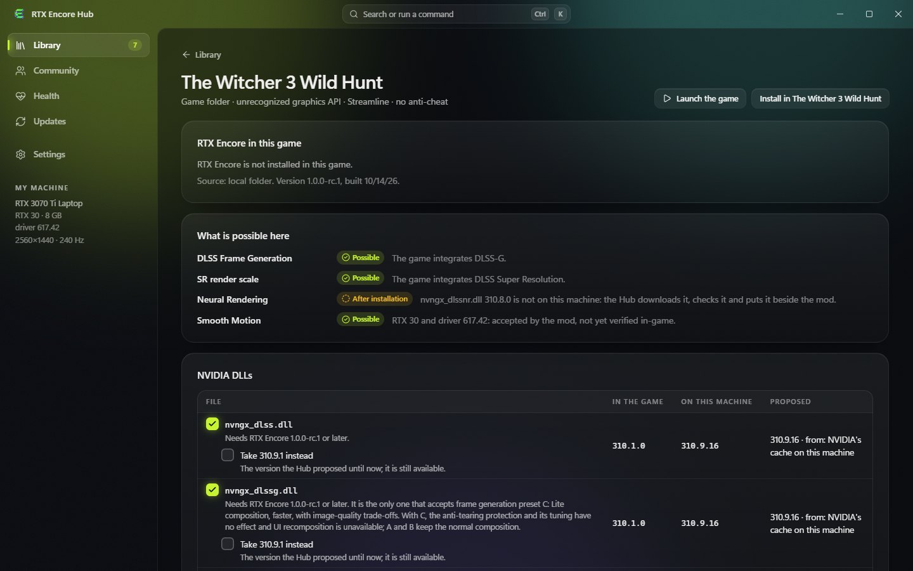
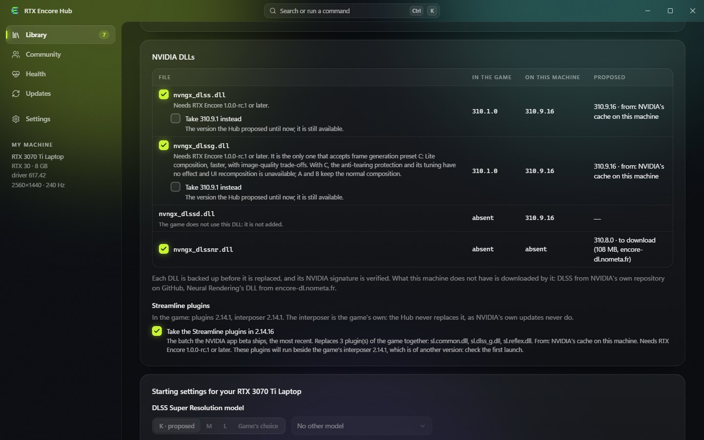

More frames.
More games.
RTX Encore.
DLSS, XeSS, frame generation up to X6 and Neural Rendering — including games without native DLSS. DirectX 11, DirectX 12 and Vulkan. Install with the Hub, choose your engines, adjust in game.
New in 2.1.0: Steady game pacing makes XeFG smooth from X3, on by default.
Intel XeSS / XeFG, Pre-SR, foveated NR and Smooth Motion on RTX 20 remain experimental. Compatibility depends on the game, graphics API and runtimes. Report an issue.
Windows 10 and 11, x64 · twelve languages · installs without administrator rights
RTX Encore 2.1.0 and Hub 2.1.0
Compatibility depends on the game, GPU, API and runtime. Games without native DLSS use estimated motion and process the HUD with the image. Maintainer tests include The Sims 4, Skyrim and Elden Ring on RTX 4090; they do not certify every game or GPU. X5/X6 and Neural Rendering remain experimental. 2.1.0 fixes were checked by the maintainer in each named game with test builds, on an RTX 4090 or RTX 3070 Ti Laptop; final 2.1.0 binaries have no separate in-game retest.
Smooth XeFG from X3
New in 2.1.0, on by default: Steady game pacing for XeFG starts the game’s frames on a regular schedule just below the rate it can sustain, so camera motion stays even across every generated image at X3 to X6. It costs a few FPS and applies live. Validated in Assassin’s Creed Black Flag Resynced at X4.
The game’s own depth and motion
Games that ship DLSS but no frame generation, such as Baldur’s Gate 3, now give their depth and motion vectors to the DLSS Frame Generation or XeFG that RTX Encore adds, in DirectX 11 and Vulkan. X4 seen in all four combinations.
Fixed in 2.1.0
Baldur’s Gate 3 frame generation stuck on Waiting, Final Fantasy VII Rebirth with the NVIDIA app’s DLSS override, Kingdom Come: Deliverance menu and Alt+Tab crash, Forza Horizon 6 XeSS, Islands of Insight upscaling, Black Flag Resynced stalls. XeFG also runs on Tensor Cores in DirectX 11 and Vulkan (experimental).
Choose what gets installed
Hub 2.1.0 opens Choose components before every install and update: the mod, each NVIDIA DLL, Streamline and the Intel files, picked separately. Unchecked files stay as they are, and a skipped component can be added later from the game page.
Steady pacing, in the Hub too
The new XeFG setting is in All game settings beside mod 2.1.0, on by default, and travels with shared profiles.
Games without DLSS
Mod 2.0.0 brings DLSS Super Resolution or DLAA, Intel XeSS, Neural Rendering and frame generation to games that ship none, from the image they display, in DirectX 11, DirectX 12 and Vulkan. Tested in PEAK, The Sims 4, Skyrim Special Edition and Football Life 2027 on an RTX 4090.
RTX Encore now has a Discord
Trying 2.1.0 and its smoother XeFG? Share your game, GPU and settings, compare results with other players, or get help with the mod and Hub.
Measured GPU processing costs, not overall FPS gains. FG: isolated benchmark, optimizations off versus on, identical output in reference tests. SR: in-game measurements, very close output. NR: Fast precision trades a little image accuracy for speed. These earlier measurements cover optimizations retained in 2.1.0; they are not a fresh test of its release binaries.
Neural Rendering, before and after
Neural Rendering is NVIDIA's network that works on the image DLSS produces: one to four passes, a style for each, HDR included. RTX Encore runs it on RTX 20, 30 and 40, with its own optimizations for RTX 30. Experimental, off by default.


The Blood of Dawnwalker at 2560 × 1440, frame generation X4, NR 310.9.16 working at 1472 × 828. The overlay in the corner gives the cost: 181 FPS without NR, 132 with it.
NVIDIA reference → with RTX Encore
Same feature before and after its optimization. For percentage-only measurements, NVIDIA reference = 100 GPU-time units; lower is better. Different GPUs and workloads: do not add these gains together.
RTX Encore Hub does the installing
Finding folders, matching DLL versions, keeping backups: the Hub does it, and shows what it will do before it does it.

Choose what gets installed
Hub 2.1.0 opens Choose components before every install and update: the mod, each NVIDIA DLL, Streamline and the Intel files, picked separately. Unchecked files stay as they are, and a skipped component can be added later from the game page.
Smooth out X3 / X4: Automatic
With mod 2.0.0, the mod learns per game whether Streamline should pace X3 and X4. The Hub shows what it learned; Measure again starts over.
Your language, in game too
The Hub now speaks twelve languages (thanks to the reporter of issue 12), and Mod menu language sets the in-game menu’s, now in eleven languages: Same as Hub by default, never over a language picked in game on install or update.
Find a game with Ctrl+F
From any page of Hub 1.6.0,
Ctrl+Fselects the game search in the title bar.Restore game can also clean up
An unticked box also deletes the mod’s settings and logs, and its private runtime folder when it holds only the Hub’s files. Thanks to the reporter of issue 8.
Update favorites only
Hub 1.5.3 can limit bulk updates to starred games while keeping the library’s overall update status.
XeSS and XeFG Tensor Cores on RTX 30/40/50
Independent, default-off experimental controls. Mod 1.5.3 admits NVIDIA 621.01 and 621.12; only the earlier RTX 4090 / 621.01 setup has in-game qualification.
V-Sync and RR preset F in Hub
Hub 1.5.3 exposes V-Sync Game / Off / On and RR preset F. V-Sync requires compatible DirectX games, excludes XeSS-FG and can add latency.
The right NVIDIA files
DLSS, frame generation and Streamline, the latest the mod admits, accepted only with a valid NVIDIA signature.
Neural Rendering's DLL
nvngx_dlssnr.dll 310.9.16, downloaded and verified.
Every setting explained
A form for rtx-encore.jsonc, greyed where a setting has no effect on your card.
Launch and verify
Watches the game's first minute and says what happened, with a diagnostic ready for a report.
Community profiles
Settings shared per game, ranked for your machine. Experimental, lightly tested.
At ease with other mods
ReShade, OptiScaler and Special K keep their file names; the Hub picks the one the game really loads.
Look before you install
What the Hub says of a game is deduced from its files, your card and your driver. It is not a certification that a feature works in that game, and it measures no performance.


Get started
- Download
RTX-Encore-Hub-Setup-<version>.exefrom the releases and run it: it installs for your account only. Or take the portable.zip, which installs nothing. - Open a game's page in the Library, read what is possible there, and press Install.
- Under Health, Launch and verify checks the first minute. When a new RTX Encore is out, Update all.
Support the project
RTX Encore and RTX Encore Hub are free and made on free evenings. A sponsorship, monthly or once, helps keep them free and moving.
Thank you to our sponsors: mennogreg, Scarhead666, MrMicko, and one who prefers to stay anonymous.